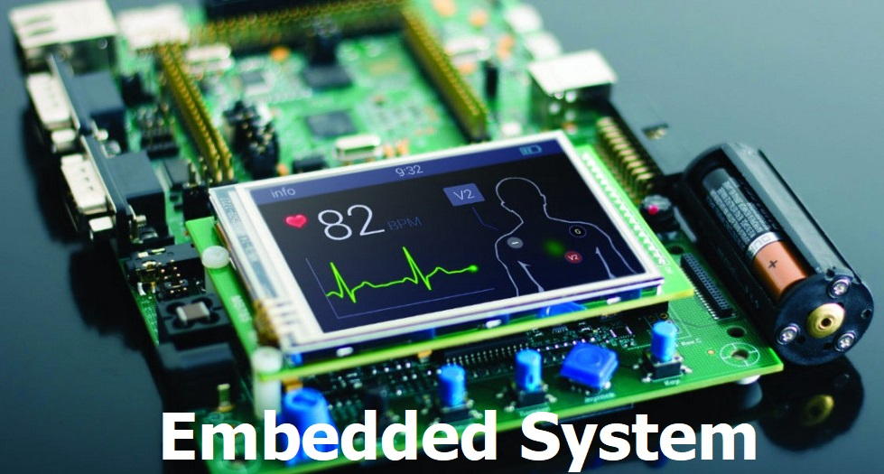

<!DOCTYPE html>
<html lang="en">

<head>
  <meta charset="utf-8">
  <meta content="width=device-width, initial-scale=1.0" name="viewport">

  <title>Portfolio Details</title>
  <meta content="" name="description">
  <meta content="" name="keywords">

  <!-- Favicons -->
  <link href="/asset/img/apple-touch-icon.png" rel="icon">
  <link href="/asset/img/apple-touch-icon.png" rel="apple-touch-icon">

  <!-- Google Fonts -->
  <link href="https://fsonts.googleapis.com/css?family=Open+Sans:300,300i,400,400i,600,600i,700,700i|Raleway:300,300i,400,400i,500,500i,600,600i,700,700i|Poppins:300,300i,400,400i,500,500i,600,600i,700,700i" rel="stylesheet">

  <!-- Vendor CSS Files -->
  <link href="assets/vendor/aos/aos.css" rel="stylesheet">
  <link href="assets/vendor/bootstrap/css/bootstrap.min.css" rel="stylesheet">
  <link href="assets/vendor/bootstrap-icons/bootstrap-icons.css" rel="stylesheet">
  <link href="assets/vendor/boxicons/css/boxicons.min.css" rel="stylesheet">
  <link href="assets/vendor/glightbox/css/glightbox.min.css" rel="stylesheet">
  <link href="assets/vendor/swiper/swiper-bundle.min.css" rel="stylesheet">

  <!-- Template Main CSS File -->
  <link href="assets/css/style.css" rel="stylesheet">


</head>

<body>
  
  <!-- ======= Mobile nav toggle button ======= -->
  <i class="bi bi-list mobile-nav-toggle d-xl-none"></i>

  <!-- ======= Header ======= -->
  <header id="header">
    <div class="d-flex flex-column">

      <nav id="navbar" class="nav-menu navbar">
        <ul>
          <li><a href="#embedded" class="nav-link scrollto active"><i class="bx bx-microchip"></i> <span>Embedded System</span></a></li>
          <li><a href="#cybersecurity" class="nav-link scrollto"><i class="bx bx-lock"></i> <span>Cybersecurity</span></a></li>
          <li><a href="#am" class="nav-link scrollto"><i class="bx bx-note"></i> <span>Additive Manufacturing(3D)</span></a></li>
        
        </ul>
      </nav><!-- .nav-menu -->
    </div>
  </header><!-- End Header -->
  
  <main id="main">

    <!-- ======= Breadcrumbs ======= -->
    <section id="breadcrumbs" class="breadcrumbs">
      <div class="container">

        <div class="d-flex justify-content-between align-items-center">
          <h1>OTHER EMERGING  TECHNOLOGIES</h1>
          <ol>
            <li><a href="index.html">Home</a></li>
            <li>Portfoio Details</li>
          </ol>
        </div>

      </div>
    </section><!-- End Breadcrumbs -->

    <!-- ======= Portfolio Details Section ======= -->
    <section id="portfolio-details" class="portfolio-details">
      <div class="container">

        <div class="row gy-4">

          <div class="col-lg-8">
            <div class="portfolio-details-slider swiper">
              <div class="swiper-wrapper align-items-center">

                <div class="swiper-slide">
                  
                </div>

                <div class="swiper-slide">
                  
                </div>

                <div class="swiper-slide">
                  
              </div>
              </div>
              <div class="swiper-pagination"></div>
            </div>
          </div>
          <div class="col-lg-4">
            <div class="portfolio-info">
              <h3>What is Emerging Technologies?</h3>
              <p>
                Emerging technologies are technologies whose development, practical applications, or both are still largely unrealized. These technologies are generally new but also include older technologies finding new applications. Emerging technologies are often perceived as capable of changing the status quo.
              </p>
            </div>
          </div>
        </div>
      </div>
    </section><!-- End Portfolio Details Section -->
    <section id="embedded">
        <div class="embedded">
            <h1>EMBEDDED SYSTEM</h1>
        </div>
        <div class="part"><br>
            <h2>What is Embedded System?</h2>
              <p>It is a controller with a dedicated function within a larger mechanical or electrical system, often 
                with real-time computing constraints. It is embedded as part of a complete device often including 
                hardware and mechanical parts. Embedded systems control many devices in common use 
                today. Ninety-eight percent of all microprocessors manufactured are used in embedded systems</p>

                <h2>Advantages of Embedded System</h2>

                <h4>Advantages</h3>
                <ul>
                    <li>Easily Customizable </li>
                    <li>Low power consumption </li>
                    <li> Low cost </li>
                    <li>Enhanced performance</li>
                </ul>

                 <h4>Disadvantages</h3>
                        <ul>
                            <li>High development effort  </li>
                            <li>Larger time to market </li>
                        </ul>
                <h2>Basic Structured of an Embedded System</h2>
                
               <h5> Sensor </h5> 
                    <p>It measures the physical quantity and converts it to an electrical signal which can be read by an observer or by any electronic instrument like an A2D converter. A sensor stores the measured quantity to the memory.</p>
                <h5> A-D Converter</h5>
                    <p>An analog-to-digital converter converts the analog signal sent by the 
                        sensor into a digital signal.</p>
                <h5>Processor & ASICs</h5>
                     <p>Processors process the data to measure the output and store it to 
                        the memory.
                        </p>
                <h5> D-A Converter</h5>
                     <p>A digital-to-analog converter converts the digital data fed by the 
                        processor to analog data.
                        </p>
                <h5>Actuator</h5>
                <p>An actuator compares the output given by the D-A Converter to the actual 
                    (expected) output stored in it and stores the approved output.</p><br>
            </div>
    </section>
    <hr>
    <section id="cyberscurity">
      <div class="cybersecurity">
        <h1>CYBERSECURITY</h1>
      </div><br>
      <section id="definition2">
      <div class="definition2">
        <h2>Cybersecurity</h2>
          <p>It is the protection of computer systems from the theft of or damage to their hardware, software, 
            or electronic data, as well as from the disruption or misdirection of the services they provide.
            The field is becoming more important due to increased reliance on computer systems, the
            Internet and wireless network standards such as Bluetooth and Wi-Fi, and due to the growth 
            of smart devices, including smartphones, televisions, and the various devices that constitute the
            Internet of Things. Due to its complexity, both in terms of politics and technology, cybersecurity 
            is also one of the major challenges in the contemporary world.</p><br>
      </div>
      <div class="measures">
        <h2>  Cybersecurity measures</h2>
        <ul>
          <li><b> Staff awareness training:</b>
            Human error is the leading cause of data breaches, so you 
             need to equip staff with the knowledge to deal with the threats they face. Training courses 
            will show staff how security threats affect them and help them apply best-practice advice 
            to real-world situations.
          </li>
          <li><b> Application security:</b>
            Web application vulnerabilities are a common point of intrusion 
            for cybercriminals. As applications play an increasingly critical role in business, it is vital 
            to focus on web application security.
          </li>
          <li><b>Network security: </b>
            Network security is the process of protecting the usability and 
            integrity of your network and data. This is achieved by conducting a network penetration 
            test, which scans your network for vulnerabilities and security issues.
          </li>
          <li><b> Leadership commitment:</b>
            Leadership commitment is the key to cyber resilience. 
          Without it, it is very difficult to establish or enforce effective processes. Top management 
          must be prepared to invest in appropriate cybersecurity resources, such as awareness 
          training.
          </li>
          <li><b> Password management:</b>
            Almost half of the UK population uses ‘password’, ‘123456’ 
            or ‘qwerty’ as their password. You should implement a password management policy that 
            provides guidance to ensure staff create strong passwords and keep them secure.
          </li>
        </ul>

      <h2>Types of Security Threats</h2>
        <ul>
          <li><b>Ransomware:</b>
            It is a type of malicious software. It is designed to extort money by 
            blocking access to files or the computer system until the ransom is paid. Paying the ransom 
            does not guarantee that the files will be recovered or the system restored.
          </li>
          <li><b>Malware:</b>
            - it is a type of software designed to gain unauthorized access or to cause damage 
            to a computer.
          </li>
          <li><b> Social engineering:</b>
            - it is a tactic that adversaries use to trick you into revealing sensitive 
            information. They can solicit a monetary payment or gain access to your confidential data. 
            Social engineering can be combined with any of the threats listed above to make you more 
            likely to click on links, download malware, or trust a malicious source.
          </li>
          <li><b>Phishing:</b>
            it is the practice of sending fraudulent emails that resemble emails from 
            reputable sources. The aim is to steal sensitive data like credit card numbers and login 
            information. It’s the most common type of cyber-attack. You can help protect yourself 
            through education or a technology solution that filters malicious emails.
          </li>
        </ul>
      </div>
    </section>
    </section>
    <hr>

    <section id="am">
      <div class="am">
        <h1>ADDITIVE MANUFACTURING (3D PRINTING)</h1>
         
        <h3>What is Additive Manufacturing?</h3>
        <p>Additive manufacturing (AM) describes types of advanced manufacturing that are used to create 
        three-dimensional structures out of plastics, metals, polymers and other materials that can be 
        sprayed through a nozzle or aggregated in a vat. These constructs are added layer by layer in realtime based on digital design. The simplicity and low cost of AM machines, combined with the 
        scope of their potential creations, could profoundly alter global and local economies and affect 
        international security. </p>
      <br><br>
      <h3>What is 3D printing?</h3>
      <p>The term 3D printing is typically used to refer to all types of additive manufacturing. However, this is not quite accurate. Strictly speaking, 3D printing refers only to the transformation of a digital CAD (Computer-Aided Design) file into a three-dimensional physical solid object or part. 

        This object is produced by a 3D printer, which “translates” the CAD file into a 3D model. It typically does this by depositing material layer by layer in precise geometric shapes using a printhead, nozzle, or other printing technology. Each layer can be considered a thinly sliced cross-section of the final object being built.</p>
      </div>
    </section>
<!--FOOTER-->

  <footer id="footer">
    <div class="container">
      
      <div class="credits">
      </div>
    </div>
  </footer><!-- End  Footer -->

  <a href="#" class="back-to-top d-flex align-items-center justify-content-center"><i class="bi bi-arrow-up-short"></i></a>

  <!-- Vendor JS Files -->
  <script src="assets/vendor/purecounter/purecounter_vanilla.js"></script>
  <script src="assets/vendor/aos/aos.js"></script>
  <script src="assets/vendor/bootstrap/js/bootstrap.bundle.min.js"></script>
  <script src="assets/vendor/glightbox/js/glightbox.min.js"></script>
  <script src="assets/vendor/isotope-layout/isotope.pkgd.min.js"></script>
  <script src="assets/vendor/swiper/swiper-bundle.min.js"></script>
  <script src="assets/vendor/typed.js/typed.min.js"></script>
  <script src="assets/vendor/waypoints/noframework.waypoints.js"></script>
  <script src="assets/vendor/php-email-form/validate.js"></script>

  <!-- Template Main JS File -->
  <script src="assets/js/main.js"></script>

</body>

</html>